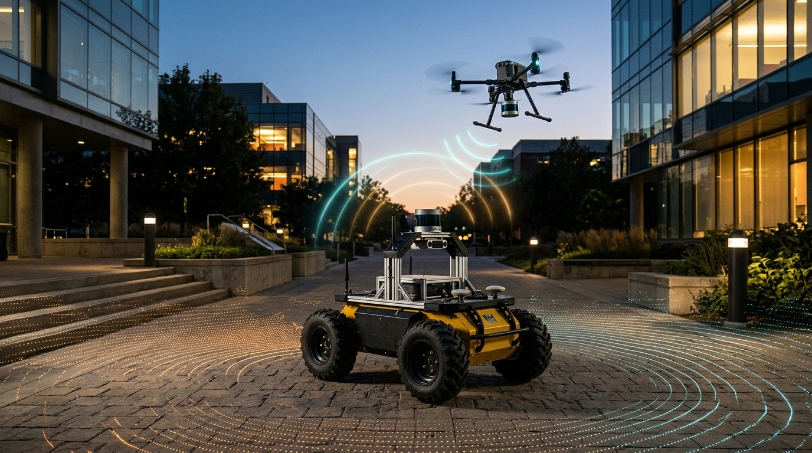

Project 1 · 05/2025 – Present · Active
Collaborative Heterogeneous Ground-Aerial Robot System
05/2025 – Present · Active · FAU EECS
Collaborative Heterogeneous Ground-Aerial Robot System (opens in a new tab)
Clearpath Moose UGV + DJI Mavic 2 Pro coordination & LLM agentic evaluation in Webots.
- ROS 2
- Webots
- Clearpath Moose
- DJI Mavic 2 Pro
- OpenAI LLMs